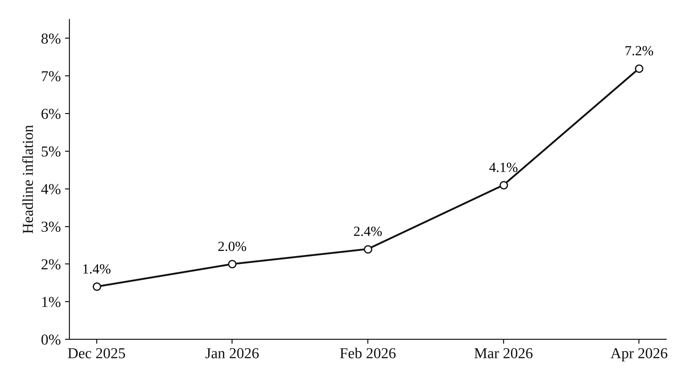
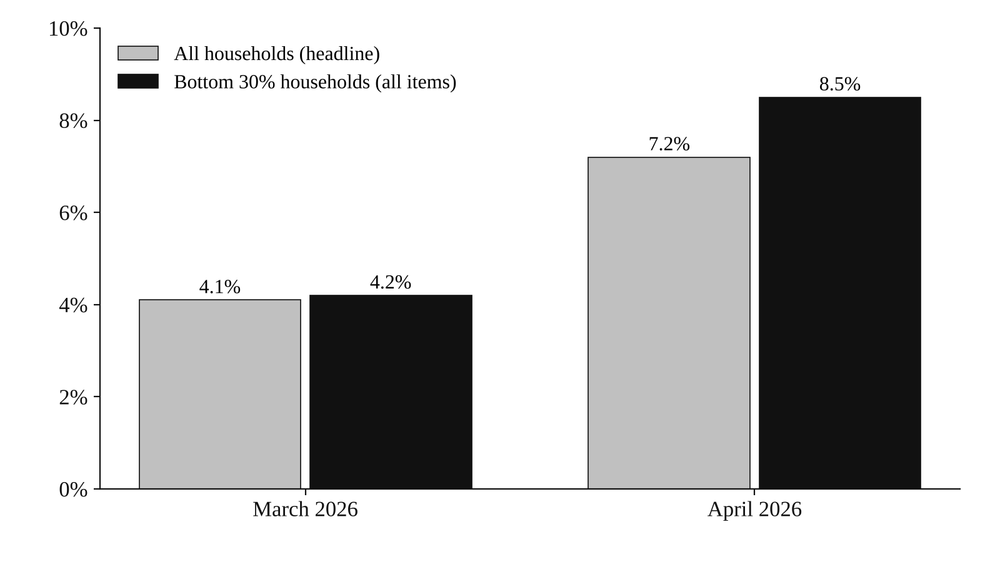

Projects · Media insights · Thematic analysis · Policy risk
Media Insight Report: Philippine Inflation and Policy Debate
How news coverage of the 2026 inflation spike turns into risks and openings for a retail client.

Context
Philippine headline inflation rose from 2.0% in January to 7.2% in April 2026, its highest in three years. I wanted to show how news coverage of that rise turns into specific risks and openings for a business.
Data
15 media and official sources from February to May 2026: national dailies, business media, releases from PSA, DOF, DBM and BSP, and international outlets.
Method
I coded the coverage into three themes (cost-of-living hardship, wage justice against business costs, and social protection as a shock absorber), read its tone, and mapped stakeholders for a retail and FMCG client.
Output
A consultant-style report with an inflation timeline, a stakeholder map, Excel charts and recommended actions.
Findings
Coverage focused on two policy levers: wage increases of up to P200 a day, and more social protection, including P43.18B released for cash aid and related programs. For the client that meant cost and wage pressure in the short term, a reputational risk around pricing, and, further out, room to line up with social protection priorities.
Reflection
I’d add social media data and an interactive dashboard.
Figures
